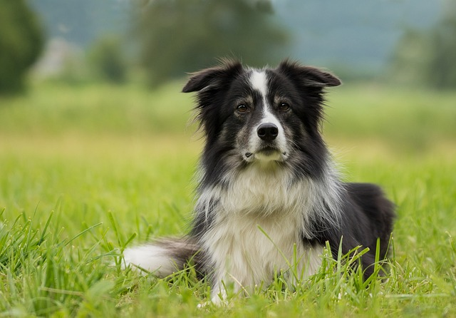

El border collie es un perro bien proporcionado y de tamaño mediano. El pelaje puede ser suave o de una longitud media, y el color más común es el negro y blanco, aunque también se presenta en otros colores combinados con el blanco, como el marrón, el azul merlé, el rojo e incluso tricolor. Los machos adultos miden unos 53 cm y la altura de las hembras es algo inferior. Suelen pesar entre 14 y 20 kg.
Los border collie siempre están listos para trabajar y se muestran atentos, activos y vigilantes. Crean un vínculo muy estrecho con su amo y su familia, pero, a menos que se les pueda dedicar mucho tiempo y hagan mucho ejercicio, no son muy adecuados para familias con niños muy pequeños, ya que su instinto natural es seguir a cualquier cosa que se mueva... incluidos tus hijos. Son decididos y valientes, pero si no se les mantiene ocupados cometerán travesuras, ya que su cerebro está siempre activo.
El origen de la raza se remonta al siglo XVIII, aunque no se le dio el nombre actual hasta 1915. Los border collies trabajaban con los pastores en las zonas fronterizas entre Escocia e Inglaterra durante cientos de años y fueron criados únicamente por su capacidad de trabajo. Algunos criadores de border collie temen que un énfasis excesivo en el aspecto y la belleza pueda llevar a la destrucción de la raza, por lo que siguen centrándose principalmente en sus cualidades para el trabajo. Suele haber diferencias entre las variedades de exposición y de trabajo.
Mas información sobre ésta raza!!!Los Pastor Alemán son una de las razas más reconocibles del mundo. Tienen un aspecto musculoso y atento y una actitud noble y distante. Son perros ágiles y bien equilibrados de porte orgulloso. Su pelaje puede presentar varios colores (consulta el estándar de la raza) y están formados por un manto superior duro, áspero y lacio, y un manto inferior grueso. La altura ideal del macho adulto es de 63 cm y la de la hembra, 58 cm. El peso puede estar entre 30 y 36 kg.
El pastor alemán desarrollará un vínculo muy estrecho con su amo y querrá pasar con él o ella el mayor tiempo posible. Aunque esta raza necesita mucha atención, lo dará todo con su lealtad y su actitud de guardián fiel e incorruptible. Por otra parte, si no dedicas tiempo a socializarlo y a entrenarlo, el pastor alemán tendrá problemas de seguridad en sí mismo y de indisciplina. Le encanta aprender y presta mucha atención al adiestramiento; de hecho, demostrará ser un alumno aventajado durante las sesiones.
Formado a partir de diferentes perros pastores, el pastor alemán se creó originalmente para el pastoreo y su origen puede rastrearse hasta el siglo VII. El pastor alemán se exhibió por primera vez en 1882 y en 1899 se formó el Verein fur Deutsche Schaferhunde, el club alemán especializado en esta raza. Fue este club el que se encargó de entrenar al pastor alemán para trabajar con la policía y las fuerzas armadas, lo que salvó a la raza de la extinción durante los tiempos difíciles de principios del siglo XX. Durante la Primera Guerra Mundial, los alemanes usaron a este perro como mensajero y también para localizar a los heridos. Los soldados aliados admiraban la inteligencia y el valor de estos perros y, al terminar la guerra, se los llevaron a casa y se estableció así la raza en otros países.
Mas información sobre ésta raza!!!